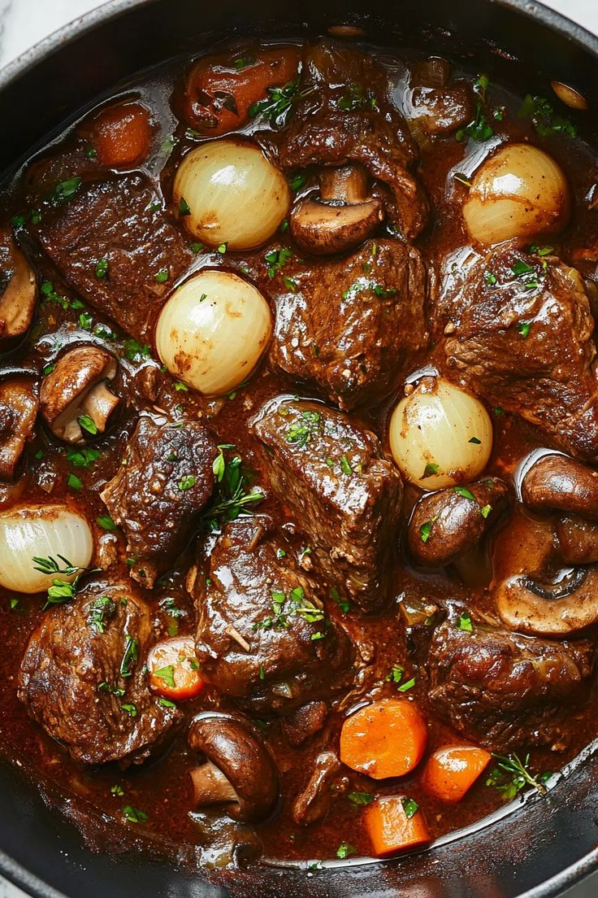

Beef Bourguignon

A traditional French stew of slow cooked beef in a red wine sauce with onions, mushrooms and other ingredients.
Ingredients
- 1.6kg/3lb 8oz good-quality braising steak (chuck steak)
- olive oil
- 200g smoked bacon
- 1 large onion
- 4 garlic cloves
- 75cl bottle red wine
- 2 tbsp tomato purée
- 1 beef stock cube
- 3 large bay leaves
- 3 sprigs fresh thyme
- 25g butter
- 450g pearl onions
- 300g chestnut mushrooms
- 2 heaped tbsp cornflour
- chopped fresh parsley
Method
- Preheat the oven to 170C/150C Fan/Gas 3.
- Cut the braising steak into chunky pieces, each around 4–5cm/1½–2in. Trim off any really hard fat or sinew. Season the beef really well with salt and pepper.
- Heat two tablespoons of the oil in a large frying pan. Fry the beef in three batches over a medium–high heat until nicely browned on all sides,
turning every now and then and adding more oil if necessary. As soon as the beef is browned, transfer to a large flameproof casserole.
- Pour a little more oil into the pan in which the beef was browned and fry the bacon for 2–3 minutes, or until the fat crisps and browns. Scatter the bacon over the meat.
- Add a touch more oil to the frying pan and fry the chopped onion over a low heat for 5–6 minutes, stirring often until softened. Stir the garlic into the pan and cook for 1 minute more.
- Add the onion and garlic to the pan with the meat and pour over the wine. Stir in the tomato purée and 150ml/5fl oz water. Crumble over the stock cube, add the herbs and bring to a simmer. Stir well,
cover with a lid and transfer to the oven. Cook for 1½ –1¾ hours, or until the beef is almost completely tender.
- While the beef is cooking, peel the button onions. Put the onions in a heatproof bowl and cover with just-boiled water. Leave to stand for five minutes and then drain. When the onions are cool enough to handle,
trim off the root close to the end so they don’t fall apart and peel off the skin.
- A few minutes before the beef is ready, melt half of the butter in a large non-stick frying pan with a touch of oil and fry the onions over a medium heat for about 5 minutes,
or until golden brown on all sides. Tip into a bowl.
- Add the remaining butter and mushrooms to the pan and cook for 2–3 minutes over a fairly high heat until golden brown, turning often.
- Mix the cornflour with the water in a small bowl until smooth.
- Remove the casserole from the oven and stir in the cornflour mixture, followed by the onions and mushrooms. Return to the oven and cook for 45 minutes more, or until the beef is meltingly tender and the sauce is thick.
The sauce should coat the back of a spoon – if it remains fairly thin, simply add a little more cornflour, blended with a little cold water and simmer for a couple of minutes on the hob.
- To serve, remove the thyme stalks. Sprinkle the casserole with parsley and serve.